Kos sme navštívili na prelome júna a júla 2025. Boli sme štyria dospelí, dva manželské páry, na 7 nocí. Leteli sme z Bratislavy a už samotný prílet na ostrov naznačil, že Kos nebude len obyčajná oddychová dovolenka pri bazéne.
Pri prílete sme sedeli tak, že z ľavej strany lietadla bolo vidieť veľkú časť ostrova. Už z výšky bolo jasné, že severné pobrežie je veternejšie, s väčšími vlnami, zatiaľ čo južná strana pôsobila pokojnejšie. Pri pristávaní sme ostrov obleteli, zakrúžili sme aj ponad oblasť blízkeho ostrova Nisyros a pristátie bolo trochu drsnejšie. K takému ostrovnému príletu to však akosi patrilo.
Kos je grécky ostrov v Dodekanézach, známy plážami, antickými pamiatkami a tým, že sa spája s Hippokratom, otcom medicíny. Oficiálny grécky turistický portál ho opisuje ako ostrov, ktorý pôsobí takmer ako otvorené múzeum s antickými aj stredovekými pamiatkami.
Prakticky už pred odletom: parkovanie pri Bratislave
Pred odletom sme riešili aj praktickú vec: kde nechať auto pri Bratislave. Nakoniec sme parkovali na súkromí v Chorvátskom Grobe. Cena bola 50 € na celý týždeň a v tom bol aj odvoz na letisko aj vyzdvihnutie po návrate. Na dvore tam mali približne šesť áut.
Toto bol za mňa dobrý príklad toho, že niekedy netreba hľadať len veľké oficiálne parkoviská. Pri menšej skupine alebo rodinnej dovolenke vie byť podobné súkromné parkovanie veľmi praktické, hlavne keď je v cene aj transfer.
Caravia Beach Hotel: dobrý all inclusive, ale vietor treba brať vážne
Bývali sme v Caravia Beach Hotel & Bungalows v oblasti Marmari, na severnej strane ostrova. Hotel je priamo pri pobreží a oficiálne sa prezentuje ako plážový rezort v Marmari s ubytovaním pri mori.
Za nás bol hotel veľmi dobrý. Mali sme all inclusive a služby boli výborné. Strava bola super, výber veľký a celkovo to pôsobilo tak, že pomer ceny a ponuky bol akurát. Páčilo sa mi aj to, že nám nedali klasické all inclusive náramky na ruku. Povedali nám, že si hostí budú pamätať. A naozaj to tak aj fungovalo. Možno detail, ale na dovolenke poteší, keď človeku nič nezavadzia, neškriabe ho to a celé to pôsobí trochu kultivovanejšie.
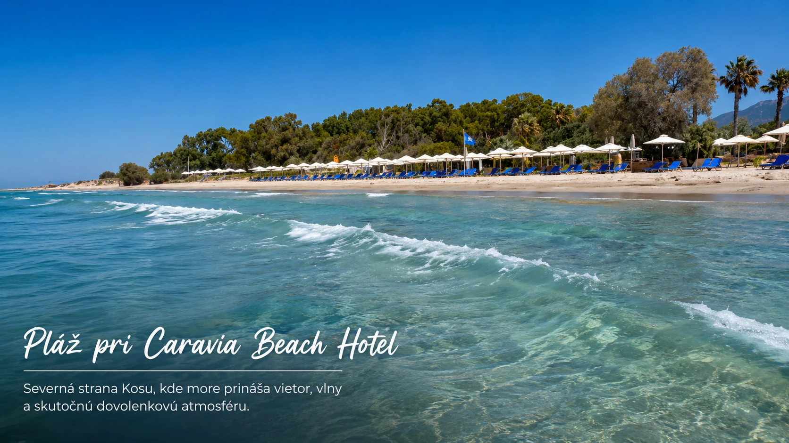
Dôležité upozornenie je však vietor. Severná strana Kosu má svoje čaro, ale nie každému musí vyhovovať. Nám to až tak neprekážalo. Dokonca to malo svoju atmosféru: vlny, vzduch, pohyb, pocit skutočného mora. Ak však niekto nemá rád silnejší vietor a hľadá pokojné kúpanie bez vĺn, skôr by som mu odporučil pozerať ubytovanie na južnej strane ostrova.
Pri hoteli sa v dostupných hodnoteniach často spomína veľký areál, zeleň, pláž, bazény a vhodnosť pre rodiny. Recenzie sú vždy subjektívne, ale viaceré zdroje opisujú Caravia Beach ako väčší rezort pri pláži s rodinným zameraním a dobrým zázemím. Naša skúsenosť tomu zodpovedala: nebol to hotel, ktorý by sa snažil ohúriť jedným efektom, skôr príjemne fungoval celý týždeň.
Prvý deň a príbeh, ktorý ostane navždy: Poseidónov mobil
Hneď prvý deň pri mori vznikol moment, na ktorý sa bude spomínať celý život. Prišli sme na pláž, fúkal silný vietor a boli veľké vlny. Jeden z nás bol prvýkrát pri mori. More ho tak chytilo, že išiel hneď do vody. Lenže zabudol, že plavky majú vrecko. A v tom vrecku mal mobil.
Mobil zmizol v mori hneď prvý deň. Vtedy to vyzeralo beznádejne. Vlny boli veľké, voda rozhýbaná a šanca nájsť telefón niekde v mori bola prakticky nulová. Počas dovolenky ho s manželkou občas hľadali, pozerali do vody, skúšali šťastie. My sme si z toho urobili takú dovolenkovú legendu, že mu ho zobral Poseidón, grécky boh mora. Ako keby mu more chcelo povedať: odlož mobil a uži si dovolenku.
A potom prišiel posledný deň. More bolo pokojnejšie. Jeho manželka ho chcela trochu nachytať, že „našla mobil“, lebo vo vode zbadala niečo, čo vyzeralo ako kameň. Lenže ona naozaj vytiahla jeho mobil.
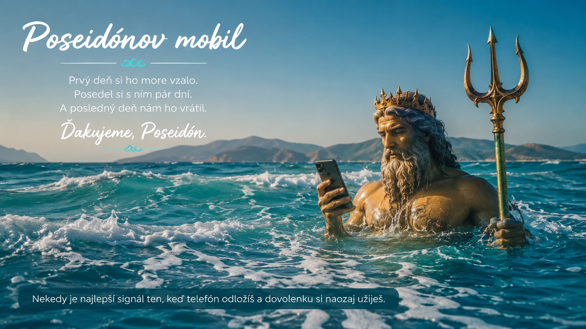
To bol silný moment. Nie ako bežná dovolenková príhoda, ale ako malý príbeh so symbolikou. Poseidón mu mobil prvý deň zobral, aby si dovolenku užil naplno, a posledný deň mu ho vrátil. Takéto veci sa nedajú naplánovať. A práve takéto momenty robia z dovolenky spomienku na celý život.
Auto na Kose: bez neho by sme prišli o polovicu zážitkov
Auto sme mali rezervované dopredu cez Autopia Rentals. Mali sme ho na tri dni, priniesli nám ho priamo k hotelu a potom si poň aj prišli. Cenu si presne nepamätám, ale bola trochu vyššia ako neskôr na Zakynthose.
Za mňa bolo auto na Kose určite správne rozhodnutie. Keby sme ostali len v rezorte, dovolenka by bola príjemná, ale nemala by toľko zážitkov. Auto nám otvorilo ostrov: pláže, vyhliadky, les s pávmi, termálne pramene, dedinku Zia, Kefalos aj miesta, kde sme boli úplne sami.
Cesty boli väčšinou také, ako človek čaká na gréckom ostrove: miestami úzke, miestami kľukaté, ale zvládnuteľné. Výnimkou bola cesta na Cavo Paradiso / Paralia Paradisos na západe ostrova. Tam to už bola trochu adrenalínová jazda: kamenistá, hlinená cesta, prudké kopce, serpentíny a kozy pri ceste.
Oficiálna stránka Kosu pri Cavo Paradiso upozorňuje, že ide o miesto na západnom cípe ostrova, ktoré nie je jednoduché dosiahnuť. Vedie sa tam prašnou cestou cez Kefalos a Agios Mamas. Presne tak sme to zažili aj my: krásne výhľady, veľa prachu, pomalá jazda a občas pocit, že auto dostáva viac dobrodružstva než my.
Plaka Forest: pávy zblízka a príjemná zastávka v tieni
Jednou z prvých zastávok bol Plaka Forest. Najväčší zážitok tu boli pávy. Boli veľmi blízko, bolo ich veľa: veľké aj malé. Rozprestierali krídla, prechádzali sa medzi ľuďmi a celé miesto malo príjemnú, oddychovú atmosféru.
Plaka Forest je známy práve voľne sa pohybujúcimi pávmi. Nie je to miesto na celý deň, ale ako krátka zastávka cestou po ostrove je veľmi dobré. Hlavne ak má človek rád prírodu, zvieratá a chce si oddýchnuť od slnka.
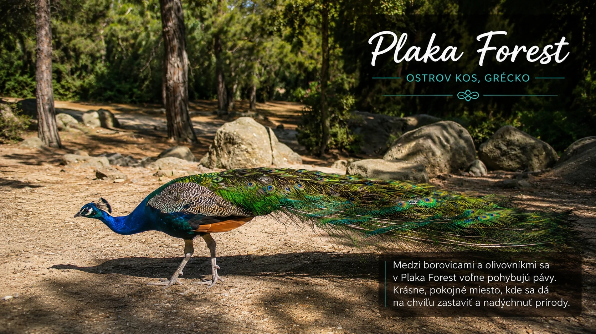
Cestovateľské zdroje ho opisujú ako borovicový les neďaleko letiska, kam sa dá pohodlne dostať autom a kde sú pávy zvyknuté na ľudí. Spomínajú sa aj mačky, korytnačky a mláďatá pávov. Nie je to veľká atrakcia s programom na celé popoludnie, skôr milá prestávka v tieni, ktorá ostane v pamäti práve tým, že je jednoduchá a prirodzená.
Paradise Beach a skalný výbežok: prírodné bazéniky a čajka strážkyňa
Pri oblasti Paradise Beach sme neostali len pri klasickom ležaní na pláži. Vybrali sme sa na skalný výbežok smerom k moru a urobili si menšiu túru. Cestou boli pekné výhľady, skaly, more a na konci rôzne prírodné útvary. Našli sme aj prírodné bazéniky, čo bol presne ten typ momentu, ktorý vznikne, keď človek nejde podľa veľkého plánu.
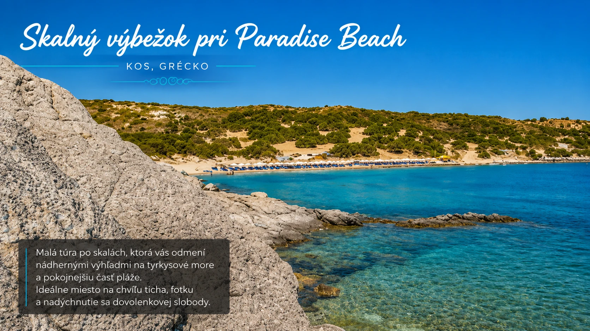
Bola tam aj malá čajka, ktorá mala pravdepodobne hniezdo a jednu z nás začala „strážiť“ trochu útočnejšie. Aj to patrí k takým dovolenkovým detailom, ktoré by v katalógu neboli, ale vo videu a v spomienkach ostanú. Paradise Beach v oblasti Kefalos pritom patrí medzi známe pláže na juhozápade Kosu. Turistické zdroje ju opisujú ako pláž s jemným pieskom, plytšou vodou a typickým plážovým zázemím.
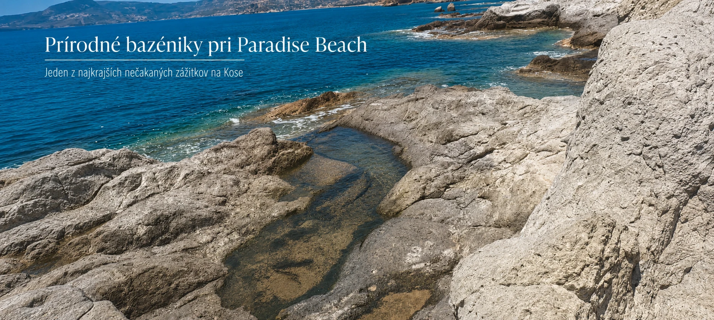
Agios Stefanos: pláž, ruiny baziliky a výhľad na Kastri
Na Agios Stefanos sme sa skôr pozreli ako kúpali. Zaujímavé je tam spojenie pláže, ruín ranokresťanských bazilík a výhľadu na ostrovček Kastri s bielou kaplnkou. Za mňa je to dobrá zastávka, ak je človek v oblasti Kefalos, najmä v kombinácii s plážami a výhľadmi.
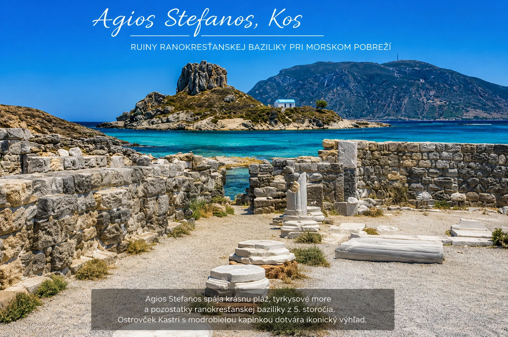
Nebol to pre nás úplný „wow“ zážitok, ale bolo tam pekne. Agios Stefanos dáva zmysel najmä vtedy, keď si človek robí vlastný okruh po západnej časti ostrova. Samotné ruiny by možno nestačili ako hlavný cieľ dňa, ale v spojení s morom, ostrovčekom Kastri a fotografiami je to miesto, pri ktorom sa oplatí zastaviť.
Mesto Kos: klasické prímorské mesto, ale s históriou za rohom
Jeden večer sme boli aj v meste Kos. Nás osobne extra neohúrilo, pôsobilo ako klasické prímorské mestečko s promenádou, reštauráciami, obchodíkmi a večerným ruchom. To však neznamená, že nemá čo ponúknuť: v meste a okolí sú historické miesta, napríklad stredoveký hrad Neratzia pri prístave.
Oficiálny turistický web Kosu pripomína, že hrad Neratzia postavili rytieri rádu johanitov a jeho výstavba prebiehala najmä v 15. a na začiatku 16. storočia. Mesto Kos je preto podľa mňa hlavne pre tých, ktorí chcú spojiť večernú prechádzku s trochou histórie. Nás viac chytila príroda, pláže a menej plánované zastávky, ale ako večerný výlet to malo svoje miesto.
Asklepion: miesto, kde sa dotknete Hippokratovej histórie
Ďalší deň sme išli hneď ráno na Asklepion. Toto miesto na nás zapôsobilo. Nie len preto, že sú tam ruiny, ale hlavne kvôli spojeniu s Hippokratom. Asklepion bol v antike miestom uctievania boha liečiteľstva Asklépia, ale aj miestom liečenia a výučby medicíny.
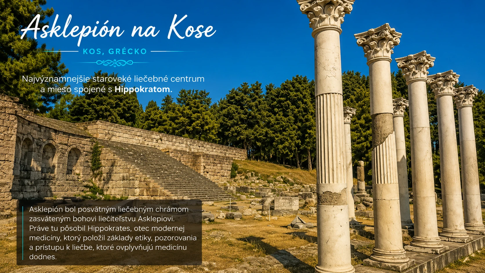
Pre človeka, ktorý vie, že dodnes sa s menom Hippokrates spája lekárska etika a Hippokratova prísaha, má toto miesto zvláštnu atmosféru. My sme to prešli skôr prakticky, neboli sme tam pol dňa, ale stálo to za to. Je to jedno z tých miest, ktoré dávajú Kosu hĺbku.
Oficiálny web Kosu uvádza, že práve tu Hippokrates založil svoju školu a učil medicínu. Spomína sa aj ceremoniálne pripomínanie Hippokratovej prísahy v priestoroch Asklepionu. Aj keď človek nie je fanúšik archeológie, toto miesto má silnejší kontext než bežné ruiny: pripomína, že Kos nie je len ostrov pláží, ale aj ostrov medicíny, histórie a starého gréckeho sveta.
Therma Springs: horúca voda, studené more a kozy pri ruksakoch
Z Asklepionu sme pokračovali na Therma Springs, termálne pramene pri mori. Dá sa tam dostať autom relatívne blízko a potom je to už len krátka prechádzka, približne do 10 minút. Ľudí tam bolo akurát: nebolo to prázdne, ale ani žiadna tlačenica.
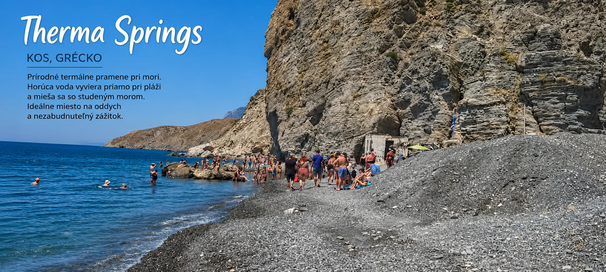
Najlepšie na tom je striedanie horúcej a studenej vody. Termálna voda vyteká pri pláži a mieša sa s morskou vodou v prírodnom kamennom bazéne. A potom sú tam kozy. Chodia medzi turistami a vedia byť dosť odvážne, najmä keď zacítia jedlo v ruksaku.
Oficiálny turistický web Kosu uvádza, že teplota prameňa sa pohybuje približne medzi 42 až 50 °C, pričom bližšie k zdroju je voda teplejšia. Kozy sú tam zážitok samy o sebe. Aj v recenziách ich návštevníci často spomínajú, najmä keď sa hrabú v taškách alebo chodia po uterákoch. Takže áno, pozor na veci neplatí len kvôli ľuďom.
Therma Springs by som určite odporučil. Nie je to luxusné wellness, je to skôr prírodný, trochu divoký zážitok. A práve preto je to dobré.
Divoká pláž, soľné jazero a Zia
Cestou späť sme sa zastavili na severnej strane ostrova, niekde medzi mestom Kos a oblasťou Tigaki, blízko slaného jazera. Presné meno pláže si nepamätáme, a možno je to tak aj lepšie. Neboli tam slnečníky, ruch ani davy. Boli sme tam iba my štyria. Piesková pláž, veľké vlny a more, v ktorom sme sa poriadne vybláznili. Asi 20 metrov od mora sa pásli kravy.
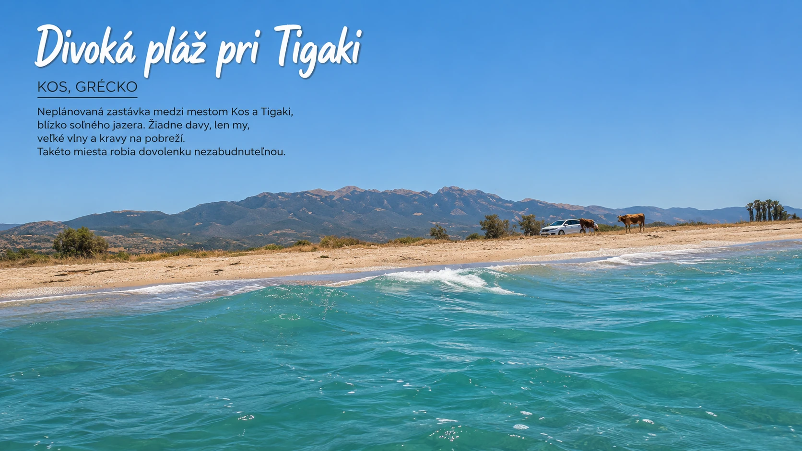
Blízko nášho hotela bolo aj soľné jazero pri Tigaki. Vybrali sme sa tam peši, ale už bolo večer a keď sme boli relatívne blízko, už sa nám nechcelo pokračovať. Aj toto patrí k reálnej dovolenke: nie všetko sa stihne a niekedy je lepšie priznať si, že už stačilo.
Jeden večer sme sa autom vybrali do dedinky Zia. Domáci a turistické materiály ju často prezentujú ako miesto s krásnym západom slnka. Najkrajší na svete? To by som netvrdil. Ale bol to veľmi dobrý zážitok: dedinka, výhľad, taverna, západ slnka a dovolenková atmosféra.
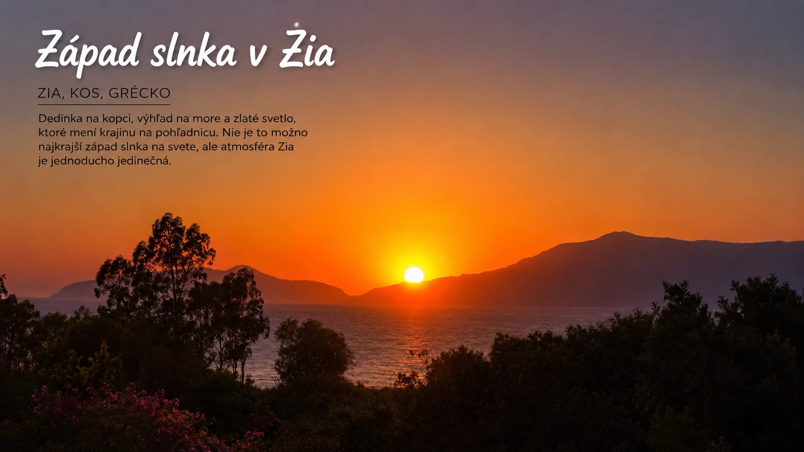
Zia leží na svahoch hory Dikeos a oficiálny web Kosu ju opisuje ako horskú dedinu známu západmi slnka, tavernami, tradičnými obchodíkmi a uličkami. Prišlo tam veľa ľudí, dokonca aj autobusy. Ako sa blížila zlatá hodinka, každý fotil, natáčal a hľadal najlepší záber. My sme si sadli do peknej taverničky, niečo si dali a užili si atmosféru.
Kefalos, Cavo Paradiso a západné pláže
Tretí deň s autom sme sa vybrali smerom na juhozápad, do oblasti Kefalos. Je to hornatejšia časť ostrova a už cesta autom bola zážitkom. Výhľady, vyprahnutá krajina, serpentíny, more v diaľke a pocit, že ideme niekam ďalej od hlavných turistických miest.
Kefalos je podľa oficiálneho webu Kosu rozdelený na pobrežnú časť Kamari a tradičnú dedinu na kopci. V okolí sa nachádzajú viaceré pláže, vrátane pokojnejšieho Limnionasu a vzdialenejšieho Cavo Paradiso na západnom cípe ostrova. Práve táto časť Kosu nám ukázala ostrov v drsnejšej, suchšej a dobrodružnejšej podobe.
Cesta na Paralia Paradisos / Cavo Paradiso bola najadrenalínovejšia časť jazdenia na Kose. Posledných približne 14 kilometrov sme išli možno 40 minút. Nebola to klasická spevnená cesta. Skôr ako keby niekto prešiel buldozérom tam a späť a tým vznikla trasa. Hlina, kamene, prudké kopce, zákruty, kozy.
Keď sme dorazili ráno, boli sme medzi prvými. Na pláži bol jeden bufet, približne do 20 slnečníkov a úplne iná atmosféra než na bežných organizovaných plážach. Širšia pláž, dlhé vlny, pekné farby mora a okolie, ktoré pôsobilo suchšie, drsnejšie, prírodnejšie.
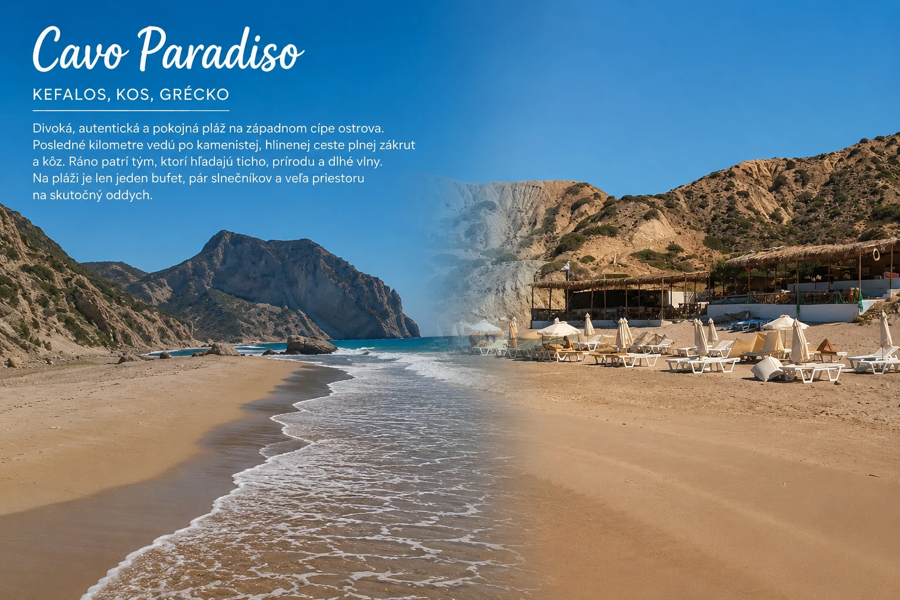
Oficiálny web Kosu opisuje Cavo Paradiso ako jeden z najlepšie ukrytých pokladov ostrova. Nie je ľahko dostupné, ale cesta ponúka scénickú trasu a výhľad na nekonečnú modrú Egejského mora. Pre ľudí, ktorí nemajú radi davy a majú radi prírodu, je to podľa mňa výborný tip. Len treba počítať s cestou. Nie je to miesto, kam by som posielal každého bez upozornenia.
Z Paralia Paradisos sme prešli peši až na koniec a ďalej na ďalšiu pláž, ktorú sme si zapamätali ako Mystic Phenomenal Beach. Tam sme boli úplne sami. Scenéria, skaly, farby, prázdno, more: nádhera.
Potom sme sa vrátili späť k bufetu. Mal inú, trochu hipsterskú atmosféru, hrala tam dobrá hudba a celé to malo pohodový štýl. Niečo medzi divokou plážou, malým barom a miestom, kde sa človeku nechce hneď odísť. Kefalos a západné pláže boli pre nás jedným z najsilnejších zážitkov dovolenky.
Limionas Beach a Nisyros, ktorý sme nestihli
Potom sme pokračovali na Limionas Beach na severozápade. Samotná pláž vyzerala pekne, ale vo vode bolo viac rias, takže nás kúpanie veľmi nelákalo. Oproti parkovisku však boli skaly a tam sme si užili úplne iný zážitok: obrovské vlny narážajúce do skál. Bola to sila prírody.
Oficiálny web Kosu opisuje Limionas ako malý záliv na severnej strane pobrežia, približne 42 kilometrov od mesta Kos, s kúskom piesku, trochou morských rias a ležadlami. Zároveň ide o relatívne odľahlé miesto, ktoré nebýva veľmi preplnené. Pre nás to nebola pláž na pol dňa vo vode, ale skaly a sila mora oproti parkovisku stáli za zastávku.
Jedna vec, ktorú sme nestihli, bol výlet na blízky ostrov Nisyros. Už pri prílete sme ho videli z lietadla a počas dovolenky sme zvažovali, že by sme tam išli. Nakoniec to nevyšlo. Keby som sa na Kos vrátil, asi by som sa snažil Nisyros stihnúť.
Nisyros je známy aktívnym vulkanickým charakterom. Oficiálny grécky turistický portál uvádza, že má veľmi dobre zachovanú kalderu s priemerom približne 4 kilometre a kráter Stefanos, ktorý patrí medzi najväčšie a najlepšie zachované hydrotermálne krátery na svete. Aj preto mi spätne príde, že by to bol výlet, ktorý by do našej dovolenky veľmi dobre zapadol.
Zaujímavé je aj prepojenie s mytológiou. Pri Nisyrose sa spomína mýtus, podľa ktorého Poseidón odlomil kus Kosu, aby ním pochoval obra Polyvota. A tu sa to pekne prepája s naším príbehom o mobile. Možno náhoda, možno len pekná dovolenková symbolika.
Pre koho je Kos dobrý tip
Kos by som odporučil hlavne tým, ktorí radi spoznávajú ostrov autom. Nie je to len o jednej slávnej pláži alebo jednom veľkom „wow“ mieste. Kos je skôr ostrov viacerých menších zážitkov, ktoré sa postupne poskladajú.
- pre ľudí, ktorí majú radi pláže, históriu a výhľady,
- pre tých, ktorí chcú all inclusive rezort, ale nechcú ostať celý týždeň len pri hoteli,
- pre cestovateľov, ktorých lákajú divokejšie pláže bez davov,
- pre ľudí, ktorí majú radi grécke taverny, večerné výlety a krátke dobrodružstvá autom.
Pre rodiny s deťmi môže byť Kos tiež veľmi dobrý, najmä ak si vyberú vhodný hotel a pláž. Caravia Beach by som pre rodiny vedel odporučiť, služby boli dobré a rezort mal príjemné zázemie. Len by som pri výbere ubytovania zvážil vietor na severnej strane ostrova.
Čo by som urobil inak
Úprimne, asi nič zásadné. Bolo to dobré tak, ako to bolo. Možno jediné: viac by som sa snažil stihnúť výlet na Nisyros. Keď už je človek na Kose a má blízko sopečný ostrov s takou silnou atmosférou, bola by škoda ho úplne vynechať.
Inak by som nemenil veľa. Mali sme dobrý hotel, auto na tri dni, pekné miesta, veľa zážitkov a jeden príbeh s mobilom, ktorý by nevymyslel ani cestovateľský scenár.
Praktické rady z našej skúsenosti
Auto sa na Kose oplatí. Ak chcete vidieť viac než len hotel a najbližšiu pláž, požičané auto výrazne zmení celú dovolenku.
Na severnej strane počítajte s vetrom. Niekomu to bude vadiť, niekomu to dodá dovolenke energiu. Ak chcete pokojné more, pozrel by som aj južnú stranu.
Na Cavo Paradiso nechoďte bez rozmyslu. Cesta je prašná, kamenistá a miestami adrenalínová. Treba ísť pomaly, opatrne a ideálne ráno.
Zia je pekná, ale netreba čakať zázrak. Je to príjemný večerný výlet, nie povinný najkrajší západ slnka na svete.
A pri kúpaní vo vlnách? Mobil určite nie do vrecka plaviek.
Záver: Kos nebol o jednom mieste, ale o celej mozaike
Kos pre nás nebol ostrov jedného veľkého zážitku. Bol to ostrov viacerých menších momentov, ktoré spolu vytvorili veľmi silnú dovolenku.
Vietor na severe. Prílet ponad ostrov. Hotel bez náramkov. Páv v Plaka Forest. Čajka pri skalách. Hippokratov Asklepion. Horúca voda v Therma Springs. Kravy pri divokej pláži. Západ slnka v Zia. Adrenalínová cesta na Cavo Paradiso. Vlny narážajúce do skál pri Limionase.
A najmä mobil, ktorý si prvý deň zobralo more a posledný deň ho vrátilo.
Možno to bol len šťastný koniec jednej dovolenkovej nehody. Ale nám sa viac páči verzia, že Poseidón si ho na pár dní požičal, aby človeku pripomenul, že niekedy je najlepšie odložiť telefón a naozaj zažiť dovolenku.
Kos by som si preto nezapamätal ako ostrov dokonalého pokoja. Skôr ako ostrov vetra, prírody, histórie, výhľadov a nečakaných príbehov. A presne preto stál za to.